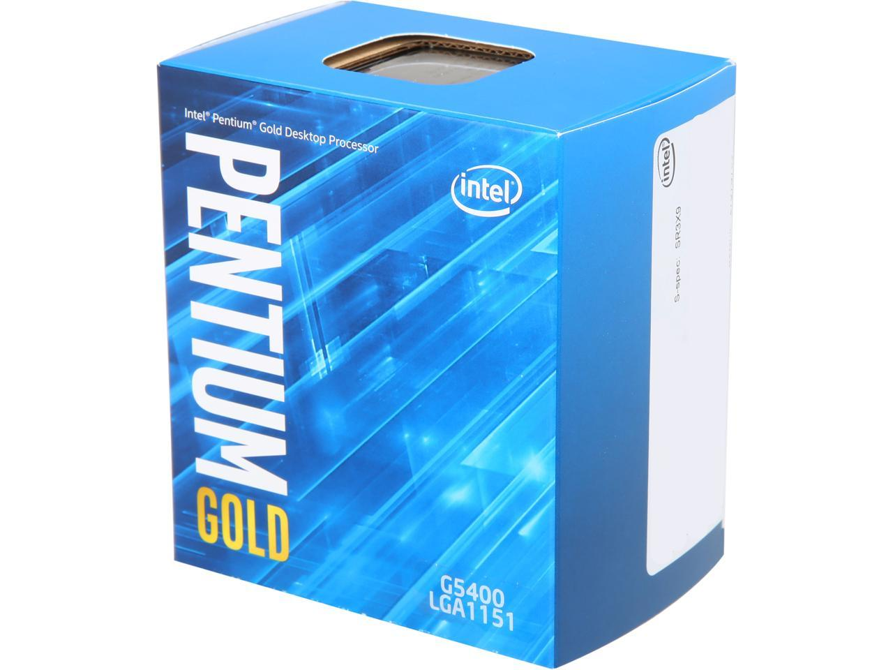

Desde ya le aclaramos que el sistema operativo en el que trabajaremos sera Windows 10.
Windows 7 ha dejado de recibir actualizaciones de mantenimiento.
1. ¿Qué planeas hacer en tu futura pc?
a. Estudio
b. Trabajo
c. Entretenimiento
1. a. Su estudio es de:
a. Investigacion ofimatica (Excel, Word, etc)
b. Graficacion 2D / 3D
Procesador Intel Celeron G5920
Se eligió este procesador porque es económico y cumple con normalidad las tareas
que tenemos como objetivo además de ser de última generación llega a tener una
arquitectura nueva la cual mejora a sus antecesores modelos, lo cual es suficiente
para poder realizar investigaciones y trabajos en ofimática.
Memoria RAM 8GB (cualquiera a partir de 2666mhz)
Actualmente 4GB de RAM se está quedando ‘corto’ en cuanto los programas actuales.
Se eligió 8GB de memoria RAM porque Windows (sistema operativo comúnmente usado)
se va actualizando con el tiempo a la vez que los programas que vamos a ir utilizando,
esto significa que tenemos que aumentar nuestros recursos, por lo tanto 8GB de memoria
RAM nos abastece muy bien.
Motherboard Gigabyte H310-MSH
Esta placa base es básica del mercado, pero nos sirve porque nos brinda características
que se acoplan a nuestro objetivo, también puede ser mejorable a futuro si nos apuntamos
a otro rubro en cuanto a su uso pero como es básica no podemos mejorar demasiado.
Fuente de energia Lnz 550w
Esta fuente no nos causará ningún problema en cuanto al uso energético ya que sus watts
son 550 y no necesita ser certificada, suficientes para alimentar a un procesador,
además de que la marca goza de buena reputación.
Gabinete Sentey G28
Este gabinete tiene el suficiente tamaño para que nuestros componentes tengan una buena
circulación de aire, su diseño minimalista lo hace elegante.
Recomendaciones (general):
Las computadoras destinadas al estudio tienen la característica de que al no demandar
tanto hardware, eso hace que tengan un precio accesible para la mayoría de la gente.
Memoria RAM:
Si necesitamos 8GB de memoria RAM se recomienda utilizar el dual channel, esto significa
2 ranuras de RAM del mismo canal (se diferencian los canales por sus colores) en funcionamiento.
Procesador:
Generalmente para estudio no se necesita hardware de alta o mediana tecnología,
esto es una ventaja económica pero también se presenta una desventaja en cuanto a un
futuro ‘upgrade’.
Procesador Intel Pentium Gold G5620

Se eligió este procesador porque es económico y cumple con normalidad las tareas
que tenemos como objetivo además de ser de última generación llega a tener una
arquitectura nueva la cual mejora a sus antecesores modelos, lo cual es suficiente
para poder realizar investigaciones y trabajos en ofimática.
Memoria RAM 8GB (cualquiera a partir de 2666mhz)
Actualmente 4GB de RAM se está quedando ‘corto’ en cuanto los programas actuales.
Se eligió 8GB de memoria RAM porque Windows (sistema operativo comúnmente usado)
se va actualizando con el tiempo a la vez que los programas que vamos a ir utilizando,
esto significa que tenemos que aumentar nuestros recursos, por lo tanto 8GB de memoria
RAM nos abastece muy bien.
Motherboard Gigabyte H310M
Esta placa base es básica del mercado, pero nos sirve porque nos brinda características
que se acoplan a nuestro objetivo, también puede ser mejorable a futuro si nos apuntamos
a otro rubro en cuanto a su uso pero como es básica no podemos mejorar demasiado.
Fuente de energia Lnz 550w
Esta fuente no nos causará ningún problema en cuanto al uso energético ya que sus watts
son 550 y no necesita ser certificada, suficientes para alimentar a un procesador, además
de que la marca goza de buena reputación.
Gabinete Sentey G28
Este gabinete tiene el suficiente tamaño para que nuestros componentes tengan una buena
circulación de aire, su diseño minimalista lo hace elegante.
Placa de video GT 710 1GB
Esta placa de video es actualmente de las mas economicas y de facil acceso ya que su
comercializacion no fue afectada con el paso del tiempo.
1. b. Su trabajo es de:
a. Edicion de multimedia
b. Documentación de archivos o documentos
c. Realización de planos/gráficos
Intel I3 9100
Este procesador se vende en el mercado hace algunos años pero lo podemos encontrar como nuevo, es cierto que tiene una arquitectura de hace 2 generaciones,
pero no le quita que nos brinda lo justo y necesario para tener archivos abiertos en simultáneo sin complicaciones en cuanto a lentitud de cierre y aperturas
de las mismas, además de que no nos molestara en arduas horas de trabajo continuo.
Memoria RAM 8GB
Actualmente 4GB de RAM se está quedando ‘corto’ en cuanto los programas actuales. Se eligió 8GB de memoria RAM porque Windows (sistema operativo comúnmente usado) se
va actualizando con el tiempo a la vez que los programas que vamos a ir utilizando, esto significa que tenemos que aumentar nuestros recursos, por lo tanto 8GB de
memoria RAM nos abastece muy bien.
Motherboard Asus Prime H310 m-e R2.0
Esta placa base es básica del mercado, pero nos sirve porque nos brinda características que se acoplan a nuestro objetivo, también puede ser mejorable a futuro si nos
apuntamos a otro rubro en cuanto a su uso pero como es básica no podemos mejorar demasiado.
Fuente de energía LNZ PX550-FS 550w
Esta fuente no nos causará ningún problema en cuanto al uso energético ya que sus watts son 550 y no necesita ser certificada, suficientes para alimentar a un
procesador, además
de que la marca goza de buena reputación.
Gabinete
Cualquier gabinete sirve para esta función, la estética queda a disposición de ustedes.
Almacenamiento
Solamente se puede decir que 1TB es la base en cuanto a almacenamiento en una PC
moderna, cualquiera actualmente tiene 1TB, además de que por precio si se busca menor memoria de
almacenamiento tienen un valor similar a 1TB. Marcas conocidas Western Digital y Barracuda
Procesador Intel i3 9100
Este procesador se vende en el mercado hace algunos años pero lo podemos encontrar como nuevo, es cierto que tiene una arquitectura de hace 2
generaciones, pero no le quita que nos brinda lo justo y necesario para tener archivos abiertos en simultáneo sin complicaciones en cuanto a
lentitud de cierre y aperturas de las mismas, además de que no nos molestara en arduas horas de trabajo continuo.
Memoria RAM 8GB
Actualmente 4GB de RAM se está quedando ‘corto’ en cuanto los programas actuales. Se eligió 8GB de memoria RAM porque Windows (sistema operativo
comúnmente usado) se va actualizando con el tiempo a la vez que los programas que vamos a ir utilizando, esto significa que tenemos que aumentar
nuestros recursos, por lo tanto 8GB de memoria RAM nos abastece muy bien.
Motherboard Asus Prime H310 m-e R2.0
Esta placa base es básica del mercado, pero nos sirve porque nos brinda características que se acoplan a nuestro objetivo, también puede ser mejorable
a futuro si nos apuntamos a otro rubro en cuanto a su uso pero como es básica no podemos mejorar demasiado.
Fuente de energia LNZ 650w
En este armado tenemos una placa de video simple, por la cual no necesitamos una fuente certificada para alimentar los componentes, directamente la alimentación
de nuestra placa de video es a través de la motherboard.
Placa de video GT 1030 2GB
Esta placa de video viene de la gama base en cuanto a placa de video nos referimos, no nos consume una gran energía considerable y tiene un precio accesible.
Gabinete
Cualquier gabinete nos sirve en ese ámbito, pero cuidado de comprar una versión Slim (pequeño) ya que nos limita en cuanto a espacio y ventilación de aire dentro del
gabinete.
Almacenamiento
Solamente se puede decir que 1TB es la base en cuanto a almacenamiento en una PC moderna, cualquiera actualmente tiene 1TB, además de que por precio si se busca menor memoria
de almacenamiento tienen un valor similar.
2. a. Usted quiere editar como:
a. Editor con conocimientos básicos (introducción de animaciones, efectos, transiciones, etc)
b. Editor con conocimientos avanzados (animación 3D, renderizado en 4K, etc)
Procesador Ryzen 5 3600x
Este procesador cuenta con 6 núcleos y 12 hilos a una frecuencia de 3,6hz (overclockable a 4,2), este modelo es actual al año
2021, por lo tanto su arquitectura es de última generación. Estamos contando con una velocidad de procesamiento en la gama media
por lo cual podemos realizar más allá de solo tareas básicas, es verdad que su precio aumenta pero es debido a que alcanzamos más
prestaciones en el hardware.
Memoria RAM 16GB
16GB de RAM son muy buenos en estos casos ya que necesitaremos guardar y mover muchos recursos gráficos (imágenes, videos) a la vez
para la edición audiovisual. Una recomendación, traten de comprar RAM con velocidad alta (3200mhz, 3400mhz)
Motherboard B450M PRO-VDH MAX
Esta motherboard presenta en su placa una mejora considerable en audio comparado a sus otros ensambladores, esto nos ayudará para la
edición de nuestro contenido y además goza de buen precio para su calidad (el famoso término precio/calidad).
Fuente de energía Aerocool 500w Bronze Cylon RGB
Necesitaremos de una fuente certificada para alimentar nuestra placa de video, esto nos asegura de que nuestros componentes no se
quemen y estén seguros.
Gabinete Sentey Z20
Se utilizara este gabinete porque nos presenta más filtros de aire para su correcta circulación, además de permitirnos agregar una
refrigeración líquida de 120mm
Placa de Video RX 570 4GB Phantom Gaming
Este modelo de la ensambladora Phantom es la mas economica del mercado en cuanto a RX 570 se refiere. Nos ayudara a procesar nuestras tareas
de manera satisfactoria, no se acerca a una gama media-alta pero cumple segun su precio.
Almacenamiento 1TB HDD
Solamente se puede decir que 1TB es la base en cuanto a almacenamiento en una PC moderna, cualquiera actualmente tiene 1TB, además de que por precio si se busca menor memoria
de almacenamiento tienen un valor similar.
Almacenamiento 240GB SSD
No se habló mucho de este segmento ya que nos era indiferente hasta este punto. Un disco SSD es 10 veces más rápido que los discos HDD (discos duros) comunes, podremos
guardar algun que otro material audiovisual temporal para trabajar de forma mas eficaz en cuanto a tiempos se refiere y nuestra pc iniciara sistema en menos de un minuto.
Procesador Ryzen 7 3700X / Ryzen 3900X
Este procesador nos ayudará con la carga gráfica que necesitamos procesar en cuanto a la resolución 4k, 8 núcleos y 16 hilos corriendo con la última arquitectura de 7nm
ofrece buen rendimiento.
Si tenemos un presupuesto más alto nos podemos dar el lujo de este Ryzen 9 para agilizar nuestras tareas gráficas.
Memoria RAM 64GB (2x32) 4000mhz GSkill Trindetz
64GB para la cantidad de datos que vamos a mover en 4k nos abastecerá de una manera factible y eficiente.
Motherboard Z370 TUF
Puede salir algo costosa para ser una motherboard, pero lo vale por mejorar su placa de sonido, además de poder utilizar memorias RAM de 4000mhz.
Fuente de energía Redragon Gc-ps011 Full Modular 80 Plus Bronce
Utilizaremos 800w, pero esta fuente esta certificada con 800w reales por lo que no nos dará problema para utilizar nuestro procesador y placa de
video potentes en este caso. Recomendación: si tenemos un presupuesto superior podemos optar por utilizar un ventilador individual para el procesador, por
ejemplo Cooling Id-cooling Frostflow 240x
Gabinete Sentey Z20
Se utilizara este gabinete porque nos presenta más filtros de aire para su correcta circulación, además de permitirnos agregar una
refrigeración líquida de 120mm
Placa de video RX 5700 XT Gigabyte 8GB
Nada que decir de esta placa de video, suficiente para nuestro trabajo y además muy aprovechable para jugar algunos videojuegos AAA
(cada A representa la carga gráfica que va a tener el juego). Cabe destacar que esta la ensambladora Gigabyte es de buena calidad y
reconocimiento internacional.
Almacenamiento 2TB HDD
No se habló mucho de este segmento ya que nos era indiferente hasta este punto. Un disco SSD es 10 veces más rápido que los discos HDD
(discos duros) comunes, cada segmento nos ayuda a agilizar nuestro trabajo. El disco HDD que también utilizaremos nos ayudará a guardar
trabajos pesados que no utilizaremos en el momento y queremos para alguna que otra observación.
Almacenamiento 240GB SSD
No se habló mucho de este segmento ya que nos era indiferente hasta este punto. Un disco SSD es 10 veces más rápido que los discos HDD (discos duros) comunes, podremos
guardar algun que otro material audiovisual temporal para trabajar de forma mas eficaz en cuanto a tiempos se refiere y nuestra pc iniciara sistema en menos de un minuto.
3. c. El entretenimiento que consume es:
a. Redes sociales y cinematografía (películas, series)
b. Videojuegos
Intel I3 9100
Este procesador se vende en el mercado hace algunos años pero lo podemos encontrar como nuevo, es cierto que tiene una arquitectura de hace 2 generaciones,
pero no le quita que nos brinda lo justo y necesario para tener archivos abiertos en simultáneo sin complicaciones en cuanto a lentitud de cierre y aperturas
de las mismas, además de que no nos molestara en arduas horas de trabajo continuo.
Memoria RAM 8GB
Actualmente 4GB de RAM se está quedando ‘corto’ en cuanto los programas actuales. Se eligió 8GB de memoria RAM porque Windows (sistema operativo comúnmente usado) se
va actualizando con el tiempo a la vez que los programas que vamos a ir utilizando, esto significa que tenemos que aumentar nuestros recursos, por lo tanto 8GB de
memoria RAM nos abastece muy bien.
Motherboard Asus Prime H310 m-e R2.0
Esta placa base es básica del mercado, pero nos sirve porque nos brinda características que se acoplan a nuestro objetivo, también puede ser mejorable a futuro si nos
apuntamos a otro rubro en cuanto a su uso pero como es básica no podemos mejorar demasiado.
Fuente de energía LNZ PX550-FS 550w
Esta fuente no nos causará ningún problema en cuanto al uso energético ya que sus watts son 550 y no necesita ser certificada, suficientes para alimentar a un
procesador, además
de que la marca goza de buena reputación.
Gabinete
Cualquier gabinete sirve para esta función, la estética queda a disposición de ustedes.
Almacenamiento
Solamente se puede decir que 1TB es la base en cuanto a almacenamiento en una PC
moderna, cualquiera actualmente tiene 1TB, además de que por precio si se busca menor memoria de
almacenamiento tienen un valor similar a 1TB. Marcas conocidas Western Digital y Barracuda
3. b. La gama en cuanto a videojuegos es de:
a. Alta
b. Media
c. Baja
Ryzen 9 3900X
Este procesador es de última generación, es capaz de soportar componentes de potentes procesamientos gráficos. Su alto precio vale
para obtener mejoras muy altas comparada a sus hermanos menores
Memoria RAM 32GB 4000mhz
32GB no nos generará ningún problema, se puede decir que son muchos GB, pero es lo que demanda en cuanto a recursos los nuevos videojuegos AAA.
Motherboard x570 Asus Prime
En cuanto a compatibilidad con nuevas tecnologías (como DDR5, PCI.EXPRESS 4.0) y drivers de buena calidad para sonido y conectividad, nos ofrece
prestaciones que algunas veces no usaremos en su totalidad ya que no la usaremos para un trabajo profesional, pero si se usaran para conectar nuevos
componentes que salen al mercado.
Fuente de energiA 1000w Gold Gigabyte
Necesitamos una fuente de energía que nos proporcione muchos watts, porque al mejorar los componentes, su rendimiento es mayor y eso produce más
consumo energético. La placa de video, procesador y refrigeración serán los principales consumidores energéticos
Placa de video RTX 3080 12GB Gigabyte
Esta placa de video tiene algo de tiempo en el mercado, pero no le saca que esté dentro del top 10 en cuanto a potencia del mercado.
Gabinete Corsair Lcue 220t RGB Airflow
Este gabinete nos permite meter una refrigeración líquida de 2 coolers de 120mm, además de poseer un tamaño considerable para
el flujo de aire.
Almacenamiento 2TB HDD y 1TB SSD
2TB de disco duro (HDD) nos servirá para guardar juegos muy pesados (los juegos actuales AAA llegan a pesar entre 100GB a 300GB)
y 1TB de disco sólido (SSD) nos ayudará a tener instalado el sistema operativo y algún que otro juego favorito para aprovechar
las velocidades del disco y acortar las cargas de mapas, mundos, etc.
Refrigeración Nox Hummer H-360 Argb Water cooling
Elegimos depender de una refrigeración líquida ya que comparada a las de aire la mayoría presenta menos temperatura y por lo tanto nos
ayuda a mantener los grados en nuestro procesador (el cerebro en nuestra pc).
Procesador Ryzen 5 3600x
Este procesador cuenta con 6 núcleos y 12 hilos a una frecuencia de 3,6hz (overclockable a 4,2), este modelo es actual al año
2021, por lo tanto su arquitectura es de última generación. Estamos contando con una velocidad de procesamiento en la gama media
por lo cual podemos realizar más allá de solo tareas básicas, es verdad que su precio aumenta pero es debido a que alcanzamos más
prestaciones en el hardware.
Memoria RAM 16GB
16GB de RAM son muy buenos en estos casos ya que necesitaremos guardar y mover muchos recursos gráficos (imágenes, videos) a la vez
para la edición audiovisual. Una recomendación, traten de comprar RAM con velocidad alta (3200mhz, 3400mhz)
Motherboard B450M PRO-VDH MAX
Esta motherboard presenta en su placa una mejora considerable en audio comparado a sus otros ensambladores, esto nos ayudará para la
edición de nuestro contenido y además goza de buen precio para su calidad (el famoso término precio/calidad).
Fuente de energía Aerocool 500w Bronze Cylon RGB
Necesitaremos de una fuente certificada para alimentar nuestra placa de video, esto nos asegura de que nuestros componentes no se
quemen y estén seguros.
Gabinete Sentey Z20
Se utilizara este gabinete porque nos presenta más filtros de aire para su correcta circulación, además de permitirnos agregar una
refrigeración líquida de 120mm
Placa de video RTX 2060 6GB Gigabyte
Esta placa de video nos trae una de las nuevas tecnologias de Nvidia, el RAYTRACING. De su linea 2000 es la hermana menor, pero
eso no la baja de su puesto en cuanto a potencia. Nos brindara excelentes cuadros por segundo (FPS) y una calidad alta-maxima
en juegos triple A (Shadow of the Tomb Raider, Forza Horizon 7, etc)
Cooler Master MasterLiquid ML240P
El gabinete tiene espacio para instalar un sistema de refrigeracion liquida de 120mm para ventilar nuestro procesador y mantener
temperaturas estables ya que nuestro procesador sera bastante consumido por los videojuegos triple A.
Procesador Ryzen 3 3300x
Este procesador posee mas velocidad en cuanto al proceso de datos por sus nucleos e hilos (4,5GHZ), pero sigue teniendo solamente
4 nucleos y 4 hilos. Esto no lo hace desmerecedor de su compra, tranquilamente puede procesar juegos en graficos medio-bajo pero
con muchos cuadros por segundo (FPS) que hace la jugabilidad mas rapida y agil.
Memoria RAM 16GB
16GB de ram en los videojuegos son los requisitos basicos a dia de hoy, las actualizaciones obligan al consumo mayor de nuestro hardware.
Como recomendacion traten de utilizar el dual channel ya que esto beneficia a nuestros Ryzen.
Motherboard B450M PRO-VDH MAX
Esta motherboard presenta en su placa una mejora considerable en audio comparado a sus otros ensambladores, esto nos ayudará para la
edición de nuestro contenido y además goza de buen precio para su calidad (el famoso término precio/calidad).
Fuente de energía Aerocool 500w Bronze Cylon RGB
Necesitaremos de una fuente certificada para alimentar nuestra placa de video, esto nos asegura de que nuestros componentes no se
quemen y estén seguros.
Gabinete Sentey Z20
Se utilizara este gabinete porque nos presenta más filtros de aire para su correcta circulación, además de permitirnos agregar una
refrigeración líquida de 120mm
Placa de Video RX 570 4GB Phantom Gaming
Este modelo de la ensambladora Phantom es la mas economica del mercado en cuanto a RX 570 se refiere. Nos ayudara a procesar nuestras tareas
de manera satisfactoria, no se acerca a una gama media-alta pero cumple segun su precio.
Almacenamiento 1TB HDD
Solamente se puede decir que 1TB es la base en cuanto a almacenamiento en una PC moderna, cualquiera actualmente tiene 1TB, además de que por precio si se busca menor memoria
de almacenamiento tienen un valor similar.
Almacenamiento 240GB SSD
No se habló mucho de este segmento ya que nos era indiferente hasta este punto. Un disco SSD es 10 veces más rápido que los discos HDD (discos duros) comunes, podremos
guardar algun que otro material audiovisual temporal para trabajar de forma mas eficaz en cuanto a tiempos se refiere y nuestra pc iniciara sistema en menos de un minuto.